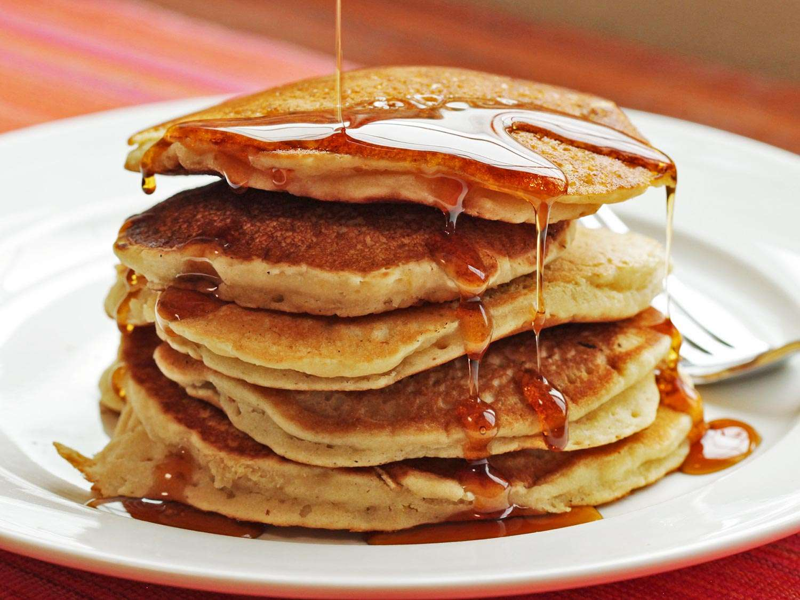

Chicken pancakes
By:Nikolas Castillo
Ingredients:
- Chicken
- Egg
- Flour
- Salt
- Mapple Syrup
- Lemonade
Rating:5/5
Review
"This is some of the best chicken pancakes that I have ever had I will be making
this again When deciding
which pancake mixes to test,
I selected brands available in major grocery chains, including
options at various price points. To keep the test consistent, I focused solely on “original” and
“buttermilk” flavors,
excluding gluten-free picks. Lastly, I only considered ones that require basic ingredients like eggs,
milk,
water, and oil (because if a box of pancake mix needs buttermilk, you might as well"
How it looks
Pancake 1

Now this looks tasty
Pancake 2
No this looks tasty
Pancake 3
No this looks tasty